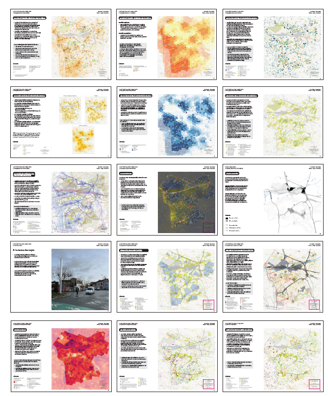
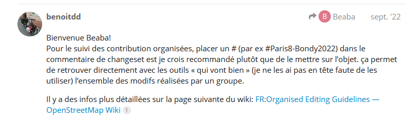
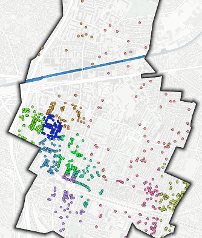

Code
data <- read.csv("data/etudiant.csv")
table(data$passé.lieu)
par(mar = c(12,2,2,2))
barplot(table(data$passé.lieu), las = 2)
barplot(table(data$passé.thème), las = 2)
barplot(table(data$présent), las = 2)
barplot(table(data$futur), las = 2)Objectif du cours : saisir le graphe piéton dans OSM pour permettre à tout piéton de le compléter avec street complete
passé / présent / futur / attentes par rapport OSM / niveau QGIS fichier framapad, celui qui parle, celui qui écrit
Qui connait Qgis ? quel niveau ? (remplir le framapad) => définir des étudiants ressource
sur le framacalc
Ce fichier va permettre de s’attribuer les zones de saisie et toutes les opérations collaboratives du cours.
quelle diffusion des données / du cours ?
Après la renaturation, un plan marchabilité à Est Ensemble, l’occasion de voir beaucoup de cartes et d’avoir un AMO plein d’idées

Les vidéos des présentations des SOTM-FR (State Of the Map) permettent d’avoir un état des lieux
vidéos SOTM 2022 => Les données d’OSM sur le mode piéton et la marchabilité consultant Montpellier / entreprise Someware 2023 => Retour sur l’expérimentation de collecte de données accessibilité du CD94 CD94 loi LOM mise en accessibilité de la voirie 2024 => Mapper des trottoirs pour l’accessibilité Lons Le Saunier / Jungle Bus (outil sidewalker) 2025 => CD94 Carto’Cité PC Ingénierie et 2 cabinets de géomètre Du scanner 3D à OSM : le Val de Marne expérimente la production en masse de données d’accessibilité automatiser le dessin des cheminements piétons
Bref, la carte diagnostic d’OSM marche
Il va servir pour la présentation, la répartition des tâches etc… Framapad Paris 8
Faire une recherche internet pour définir OSM.
Questions :
Quelle différence entre openstreetmap.org et openstreetmap.fr
Que faut-il retenir des 10 commandements ?
openstreetmap.org, attention au pseudo.
Paramétrage F12 pour lien remote
serveur OSM
contrôle à distance
Le support, fait sous R Quarto, sert uniquement de “fil rouge”.
Les procédures employées sous QGIS / JOSM sont résumées sur un support papier distribué.
En utilisant l’icone à droite du cours, copie du projet GIT en début et en fin de session (via l’option download zip)
Directement sur le git ou sur le partage réseau au fur et à mesure.
Partage réseau, au niveau de la zone de recherche, taper
\\C210-PSélectionner ensuite le répertoire partage géographie et OSM, clic droit Ajouter un raccourci rapide
Le dépôt des cartes se fera sur le partage réseau.
Déposer sa carte dans le répertoire img/cartes avec comme syntaxe : prenom.png
Il s’agit de mettre en place un cercle vertueux dans l’utilisation d’OSM : extraire, contribuer, vérifier sa saisie en extrayant de nouveau et contribuer pour l’améliorer.
JOUR 1 : Etablir l’état des lieux des voies piétonnes, utiliser le plugin JOSM pour tracer quelques routes
JOUR 2 : Deuxième saisie, utiliser un plugin QGIS et un import dans JOSM pour essayer d’aller plus rapidement. Est-ce possible ?
JOUR 3 : Faire un itinéraire dans Qgis et perfectionner le graphe piéton en saisie manuelle dans JOSM
Au niveau du temps, cela donne :
[1] 9526 H par jour => 3 * 180 = 540
40 mn de moins… le temps des pauses… 15 mn toutes les 1 H 30, on sera un peu court.
horaires
lundi : 10 - 17 h
mardi : 9 - 16 h
mercredi 9 - 12 h / 14 h 45 - 17 h 45 car réunion de rentrée à 12 h 30
Voir également heures de repas et 1er jour
pas d’évaluation officielle
CARTE 1 : compétences de base QGIS, affichage de la donnée piétonne sur fond positron
CARTE 2 : un avant / après sur sa zone
CARTE 3 : le résultat du plugin Qgis avant et après buffer
CARTE 4 : itinéraire piéton avant après
CARTE 5 : graphe piéton ensemble de la commune
Pour la saisie OSM, chaque étudiant notera le nombre de saisies faites
Concernant la qualité de la saisie, éviter absolument le retour de bâton OSM, notamment pour il y a deux ans.
Donc, impérativement mettre dans le commentaire de changeset : #Paris8-Bondy2026

Egalement, examiner les contributions dans le détail avec les outils de contrôle de qualité d’OSM : chez neis
Un mot au sujet du collectif, ce cours est aussi l’occasion de tester une organisation de travail en groupe (c’est la raison d’être d’OSM) donc répartition des étudiants sur chaque iris.

Quelques liens utiles tout au long du cours
une référence en livre : QGIS Map Design - Second Edition d’Anita Graser and Gretchen N. Peterson (2020)
features souvent très lent
taginfo plus rapide
qui permet de remonter sur le détail de chaque contribution par changeset.
également dans osmose
Mais le mieux reste :
historique dans openstreetmap.org
le projet marchabiilté et l’application OSM marche
Comment tagger le trottoir (en anglais) ? saisie manuelle dans l’éditeur id et utilisation de la photo